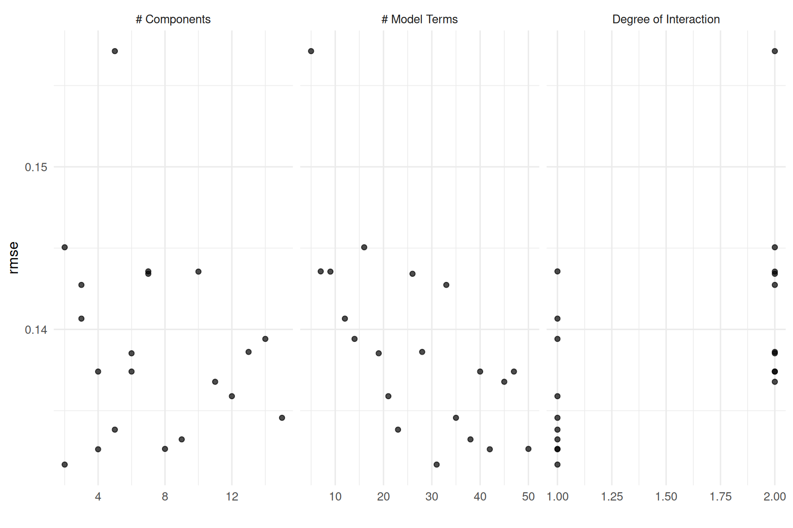
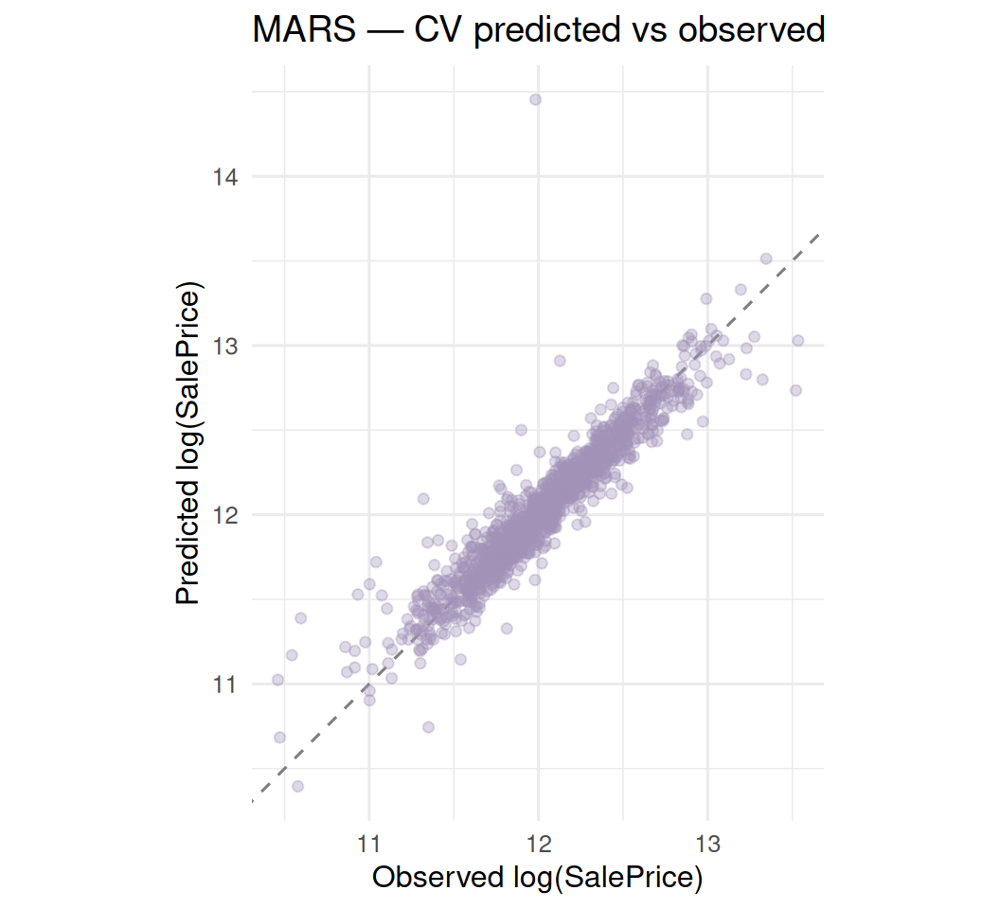

Show code
source(here::here("R", "00_setup.R"))
source(here("R", "02_features.R"))
library(tidyverse)
library(tidymodels)
library(here)
library(vip)
library(earth) # the engineMultivariate Adaptive Regression Splines via earth
Where we are: Last of six base model documents in the House Prices — Tidymodels Tour. Same structure as the others; we model
log(SalePrice)and score on RMSE.
MARS fits the response as a sum of hinge functions — piecewise-linear splines with automatically chosen knots — and can multiply them for interactions. That makes it naturally suited to housing data, where a feature’s effect often changes slope at a threshold (e.g. living area matters more up to a point). It is nonlinear yet interpretable, and diverse from the trees. We tune the number of retained terms and the interaction degree.
preds <- prep(make_recipe(train, num_comp = 2)) |>
bake(new_data = NULL) |>
select(-SalePrice, -Id)
mars_params <- extract_parameter_set_dials(mars_wf) |>
finalize(preds) |>
update(
num_terms = num_terms(range = c(5L, 50L)),
num_comp = num_comp(range = c(2L, 15L))
)
set.seed(42)
mars_grid <- grid_space_filling(mars_params, size = 20)
collect_predictions(mars_tuned) |>
filter(.config == best_mars$.config) |>
ggplot(aes(x = SalePrice, y = .pred)) +
geom_abline(slope = 1, intercept = 0, colour = "grey50", linetype = 2) +
geom_point(alpha = 0.35, colour = house_pal[6]) +
labs(title = "MARS — CV predicted vs observed",
x = "Observed log(SalePrice)", y = "Predicted log(SalePrice)") +
coord_equal()
---
title: "Model 6 — MARS"
subtitle: "Multivariate Adaptive Regression Splines via earth"
---
> **Where we are:** Last of six base model documents in the
> [House Prices — Tidymodels Tour](../index.qmd). Same structure as the others;
> we model `log(SalePrice)` and score on RMSE.
## Why MARS?
MARS fits the response as a sum of **hinge functions** — piecewise-linear splines
with automatically chosen knots — and can multiply them for interactions. That
makes it naturally suited to housing data, where a feature's effect often
*changes slope* at a threshold (e.g. living area matters more up to a point). It
is nonlinear yet interpretable, and diverse from the trees. We tune the number
of retained terms and the interaction degree.
## Setup
```{r}
#| label: setup
#| message: false
#| warning: false
source(here::here("R", "00_setup.R"))
source(here("R", "02_features.R"))
library(tidyverse)
library(tidymodels)
library(here)
library(vip)
library(earth) # the engine
```
```{r}
#| label: load-data
#| message: false
train <- readr::read_csv(here("data", "processed", "train.csv"),
show_col_types = FALSE) |>
mutate(SalePrice = log(SalePrice))
```
## Recipe, spec, workflow
```{r}
#| label: recipe-spec
mars_recipe <- make_recipe(train)
mars_spec <- mars(
num_terms = tune(),
prod_degree = tune()
) |>
set_engine("earth") |>
set_mode("regression")
mars_wf <- workflow() |>
add_recipe(mars_recipe) |>
add_model(mars_spec)
```
## Tuning with 10-fold cross-validation
```{r}
#| label: resamples
set.seed(42)
folds <- vfold_cv(train, v = 10, strata = SalePrice)
```
```{r}
#| label: grid
preds <- prep(make_recipe(train, num_comp = 2)) |>
bake(new_data = NULL) |>
select(-SalePrice, -Id)
mars_params <- extract_parameter_set_dials(mars_wf) |>
finalize(preds) |>
update(
num_terms = num_terms(range = c(5L, 50L)),
num_comp = num_comp(range = c(2L, 15L))
)
set.seed(42)
mars_grid <- grid_space_filling(mars_params, size = 20)
```
```{r}
#| label: tune
#| message: false
#| warning: false
mars_metrics <- metric_set(rmse, rsq)
set.seed(42)
mars_tuned <- tune_grid(
mars_wf,
resamples = folds,
grid = mars_grid,
metrics = mars_metrics,
control = control_grid(save_pred = TRUE, save_workflow = TRUE)
)
saveRDS(mars_tuned, here("models", "mars_res.rds"))
```
### Tuning results
```{r}
#| label: tune-plot
#| fig-cap: "RMSE across the tuning grid (autoplot)."
#| fig-width: 9
#| fig-height: 6
autoplot(mars_tuned, metric = "rmse")
```
```{r}
#| label: tune-table
show_best(mars_tuned, metric = "rmse", n = 5)
```
## Finalize and fit
```{r}
#| label: finalize
best_mars <- select_best(mars_tuned, metric = "rmse")
best_mars
final_mars_wf <- finalize_workflow(mars_wf, best_mars)
set.seed(42)
mars_fit <- fit(final_mars_wf, data = train)
```
## Cross-validated performance
```{r}
#| label: cv-metrics
collect_metrics(mars_tuned) |>
semi_join(best_mars, by = names(best_mars)) |>
select(.metric, mean, std_err, n)
```
### Observed vs predicted (out-of-fold)
```{r}
#| label: obs-pred
#| fig-cap: "Out-of-fold predicted vs observed log(SalePrice)."
#| fig-width: 5.5
#| fig-height: 5
collect_predictions(mars_tuned) |>
filter(.config == best_mars$.config) |>
ggplot(aes(x = SalePrice, y = .pred)) +
geom_abline(slope = 1, intercept = 0, colour = "grey50", linetype = 2) +
geom_point(alpha = 0.35, colour = house_pal[6]) +
labs(title = "MARS — CV predicted vs observed",
x = "Observed log(SalePrice)", y = "Predicted log(SalePrice)") +
coord_equal()
```
### Variable importance
```{r}
#| label: vip
#| fig-cap: "Features retained in the MARS model, by importance."
#| fig-width: 7
#| fig-height: 5
mars_fit |>
extract_fit_parsnip() |>
vip(num_features = 15, geom = "col",
aesthetics = list(fill = house_pal[6])) +
labs(title = "MARS variable importance") +
theme_minimal()
```
## Save the fitted workflow
```{r}
#| label: save
saveRDS(mars_fit, file = here("models", "mars_fit.rds"))
```
## Submission
```bash
quarto render docs/submission.qmd -P model:mars
```
## Next steps
- Blend all six base models in the **[Stacked Ensemble](05-stack.qmd)**.
- Back to the **[master results table](../index.qmd)**.